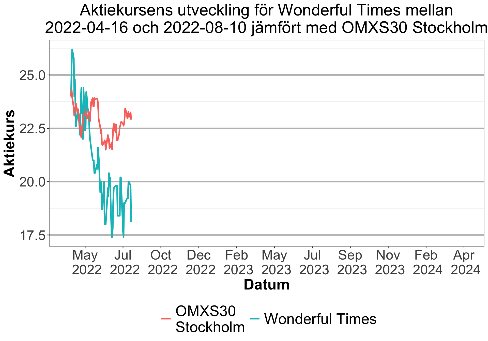
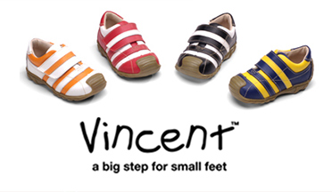
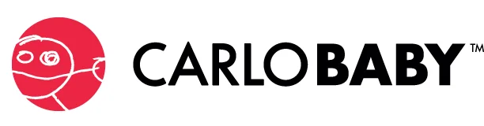
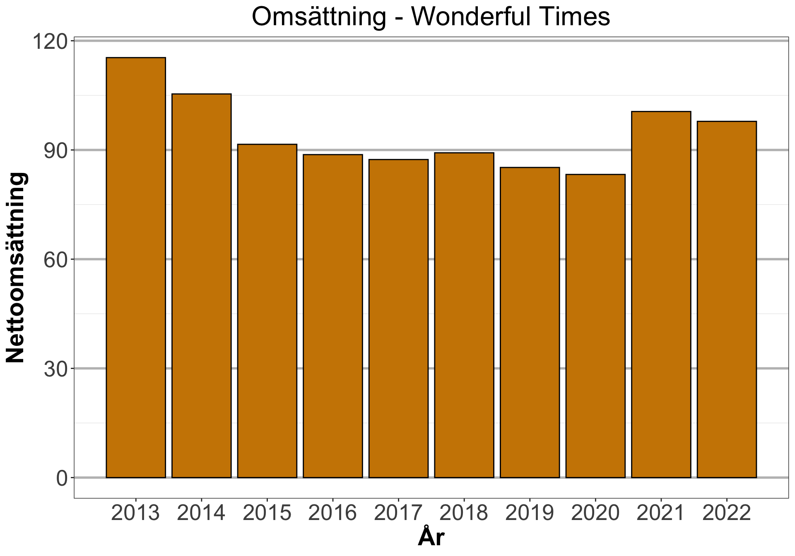
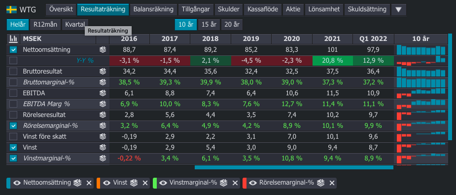

Bolagsanalys av Wonderful Times Group
aktieanalys
bolagsanalys
Wonderful Times Group är ett superlitet bolag, finns det något att hämta här?
Tänk på att investeringar alltid innebär ett risktagande. Gör alltid din egen analys innan eventuell handel. Jag tar inget ansvar för vad ni väljer att göra med denna information.
Sammanfattning
Wonderful Times Group är ett väldigt litet bolag som ger exponering mot sällskapsspel och barnkläder. Det är genom en handful av olika bolag som alla intäkter kommer ifrån och inget som ser särskilt spännande ut vid närmare anblick. Värderingen i bolaget är helt okej, om bolaget lyckas fortsätta att tjäna lika mykcet pengar som tidigare utan någon variation så anser jag caset handlas till ungefär fair value, om inte lite för högt pga just nu höga marginaler samt corona boostat i ALF.
Bakgrund
Wonderful Times Group (WTG) är verksamma inom konsumentindustrin. Bolaget är en tillverkare av barn- och underhållningsprodukter. Koncernen marknadsför och säljer både egna och licensierade varumärken. Verksamheten styrs utifrån flertalet affärsområden och exempel på produkter innefattar spel, barnleksaker och barnvagnar. Största delen av kunderna återfinns på den nordiska marknaden. Huvudkontoret ligger i Huskvarna.
Finansiellt finns bolaget på Spotlight stock market och börsvärde är ca 86 mkr, fördelat på ca 20 anställda. WTG:s verksamhet säljer egna och inlicensierade varumärken i Sverige och Norge.
Verksamhet
WTG fördelar sin verksamhet i två verksamhetsområden: Brands och Service. Brands innefattar egna varumärken som ALF och Vincent. Service innefattar produkter som saknar varumärke som främst riktar sig till B2B.
Under 2021 redovisade verksamheten en omsättning på 56 miljoner för Lek och spel, 40 miljoner för Barn- och babyprodukter samt 5 miljoner för Barnskor.
Brands
Brands innefattar varumärken som ALF, Vincent och Sun Toys. Sun toy är väldigt litet.
ALF
Användbart Litet Företag (ALF) är ett av Nordens ledande varumärken inom sällskapsspel. Med huvudfokus på party-, barn- och familjespel har ALF sedan början på 1990-talet skördat stora framgångar med moderna klassiker som ”Med Andra Ord”, ”Galenpanna” och ”Spökjägarna”. Bland bästsäljarna återfinns även de nya succéspelen “På 5 Sekunder” och ”Nåt Ska Bort”, varav det senare nominerades till årets vuxenspel 2020.
Under 2021 omsatte ALF och Sun toy tillsammans 55 684 tkr. ALF finns på webben genom sin sajt. Sun Toy finns också på webben, men hemsidan fungerade inte när jag försökte ladda den. Uselt.
ALF har varit motorn i bolaget för att få högre tillväxt och under pandimin har allt fler flockats kring sällskapsspelen. Jag tror detta kan ha en negativ inverkan på omsättningen, då Q1 präglades av “bunkringseffekter”.
Vincent Shoes

Vincent designar och säljer funktionella och roliga skor och stövlar för barn. Under 2021 omsatte Vincent 4765 tkr. Vincents hemsida ser ut som totalt skräp.
Service
I Service erbjuder WTG ett brett sortiment av produkter från välkända, starka varumärken samt produkter utan varumärke, så kallade ”non-branded”-produkter. Arbetet med varumärken är en blandning av agenturer och egna varumärken.
WTG erbjuder även tjänster till restauranger av leksaker till barnmenyer, och försörjer även rederier med ”leksaks- avdelningen” ombord.
Under varumärket Tullsa utvecklar och tillverkar WTG barnvagnstillbehör och har återförsäljare i Sverige, Norge, Danmark och Ryssland. Under varumärket Carlo Baby utvecklar WTG funktionella produkter för babyns första år och är främst verksamma på den svenska och norska marknaden.
Som exempel på några välkända internationella varumärken där WTG har agentur kan nämnas Playgro, Bumbo, Munchkin och Lascal.
Carlo baby/kids

Under 2021 omsatte Services 40 112 tkr, främsta varumärket verkar vara Carlo baby, som är en usel hemsida.
Strategi
WTG:s strategi är att öka befintlig omsättning genom i första hand organisk tillväxt. Den organiska tillväxten stärks av nya produktlanseringar samt geografisk expansion. En större andel egna produkter och koncept bör på sikt ge ökad lönsamhet.
Ledning
Bolaget är så litet räcker det med att täcka vd Sofia.
Sofia Ljungdahl (Verkställande direktör)
Sofia Ljungdahl har varit vd i WTG sedan 2015. Bolaget omsatte då 100 miljoner sek likt som det gör idag. När hon tillträdde var lönsamhet ett problem inom koncernen och sedan hon har varit vd har lönsamheten svajat upp och ner, men mest upp för att nå runt 9 procent som är dagens vinstmarginal.
Hon gjorde det som han sa att hon skulle göra och det bygger förtroende. Sofia ökade nyligen sitt ägande med 10 000 aktier.
Styrelse
Ola Brageborn (styrelseordförande)
- Hemvist: Linköping
- Född: 1976
- Position: Styrelseordförande
- Invald år: 2019
- Huvudsaklig sysselsättning: Investeringsansvarig Armatus AB
- Andra uppdrag: Ordförande i Armatus AB, Ordförande i Kvalitetsaktiepodden i Linköping AB.
- Övrigt: Civilingenjör i Industriell Ekonomi, Linköpings Universitet
Jag har under många år lyssnat på Kvalitésaktiepodden och har ett stort förtroende för Olas ordning och reda när det kommer till investeringsfilosofi.
Kasper Ljungkvist (största ägare)
Hemvist: Stockholm Född: 1973 Position: Styrelseledamot Invald år: 2020 Huvudsaklig sysselsättning: Investerare Andra uppdrag: Styrelsearbete i bland annat Investment AB Spiltan, Perido-gruppen, Femtiofemplus AB Övrigt: Civilingenjör i Industriell Ekonomi, Linköpings Universitet
Finansiell historik
Finns noterade på Spotlight Stock Market. Utdelningen är 1,40 kronor per aktie under 2021. Har varit på börsen länge.
Risker
Sällskapsspel har under en längre tid haft tuff konkurrens mot andra liknande spel samt indirekta konkurrenter som skärmarna runt omkring oss har att erbjuda. Har spelen i fysiskt form en framtid? Ja, det tror jag, men kanske inte någon marknad som kommer att bli större än vad den är idag.
Barnkläder kommer antagligen finnas kvar för evigt, men Carlo/Vincent är inte några särskilt utmärkande varumärken där jag tvekar på att det kommer att bli större.
Omsättning

Omsättningen är upp och ner från år till år. Under 2021 ökade omsättningen med 21 procent för att nu minska i Q1 pga bunkringseffekter. Det är rimligt att förvänta sig att omsättningen svänger i ett sådant litet bolag.
Värdering
WTG handlas till 7,9x rörelsevinsten (EV/EBIT) och 10,1x vinsten på rullande 12 månader. WTG har en nettokassa på 11 miljoner och svajiga marginaler. Med tanke på osäkerheterna kopplat till marginalerna som ökar och minskar så anser jag att bolaget är värt runt 10x vinsten.

Om bolaget växer på med 5-10 procent per år så är det billigt. Om vinstmarginalen ökar från dagens 9.3 procent så är det också billigt. Om vinstmarginalen däremot hamnar i en svacka kan vinsten i bolaget gå från dagens ca 9.2 miljoner till 3.5 miljoner. Multiplarna skulle då gå i höjden och någon gång lär detta hände då företaget under många år haft det tufft med lönsamheten. Risken är då att värderingen halveras, men i ett worst case så minskar värderingen till 9 SEK givet att det är bara ett år med sämre marginaler.
Case
Det jag ser i caset är att bolaget tuggar på precis som man har gjort under en längre tid. Ola som är styrelseordförande är skicklig och tror jag kan lyckas få verksamheten att hålla sig borta från förluster som tidigare har präglat bolaget.
Givet att bolaget maler på så är det inte orimligt att tro att 10x värderingen håller i sig och utdelningen fortsätter vara runt 7 procent per aktie. Spontant uppfattar jag caset som att företaget spelar ganska defensivt och inte tar så mycket initiativ.
Jag uppfattar det hela lite svårt att bedömma och caset är inte särskilt attraktivt om inte det händer något speciellt som gör bolaget värt mer. Annars är det främst en hög risk utdelare.
Sammanfattning
Wonderful Times Group är ett väldigt litet bolag som ger exponering mot sällskapsspel och barnkläder. Det är genom en handful av olika bolag som alla intäkter kommer ifrån och inget som ser särskilt spännande ut vid närmare anblick. Värderingen i bolaget är helt okej, om bolaget lyckas fortsätta att tjäna lika mykcet pengar som tidigare utan någon variation så anser jag caset handlas till ungefär fair value, om inte lite för högt pga just nu höga marginaler samt corona boostat i ALF.
Fortsättning av caset
Vidare analys kan göras:
- Analysera de olika spelen som ALF släpper och möjliga marknader för detta.
- Gräva in i detaljnivå kring var olika produkter säljer
- Något pressmeddelande kommer ut som förändrar caset i sin grund